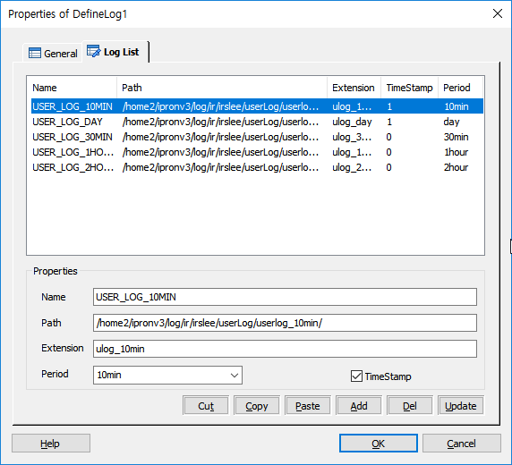

시나리오에서 사용할 Log 파일의 기본 정보를 미리 설정하여 해당 시나리오 파일(.SSFX, .MSFX)에서 LogWrite Item 을 사용하여 해당 로그파일에 로그를 기록 할 수 있도록 합니다.
ICON

PROPERTIES
 Log List
Log List

Name : Unique한 이름의 로그 명을 지정합니다. 문자 및 숫자로 구성 할 수 있으며 변수는 사용 할 수 없습니다.LogWrite Item 에서 로그명을 지정하여 사용 합니다.
Path : 실제 로그가 기록되는 서버(SLEE 엔진 시스템)의 로그파일 경로를 지정 합니다.
Extention : 로그 파일의 확장자를 지정 합니다.
Period : 로그 파일이 기록되는 시간 기간을 지정 합니다. 지정된 시간 기간이 지나면 새 로그 파일이 생성 됩니다.
TimeStamp Check Box: 로그 파일내에 시간을 기록 할지를 지정합니다..
Cut Button : 선택한 리스트를 잘라냅니다.(Ctrl+X)
Copy Button : 선택한 리스트의 내용을 복사 합니다.(Ctrl+C)
Paste Button : 복사한 리스트의 내용을 붙여넣기 합니다.(Ctrl+V)
Add Button : 현재 Properties의 항목에 있는 내용으로 로그를 추가 정의 합니다. Name은 중복 될 수 없고, Name과 Path가 비어 있으면 추가 할 수 없습니다.
Del Button : 리스트 박스에 선택된 로그 정보를 삭제 합니다.
Update Button : 리스트 박스에 선택된 로그 정보를 현재 Properties의 항목의 내용대로 갱신 합니다.
RELATED